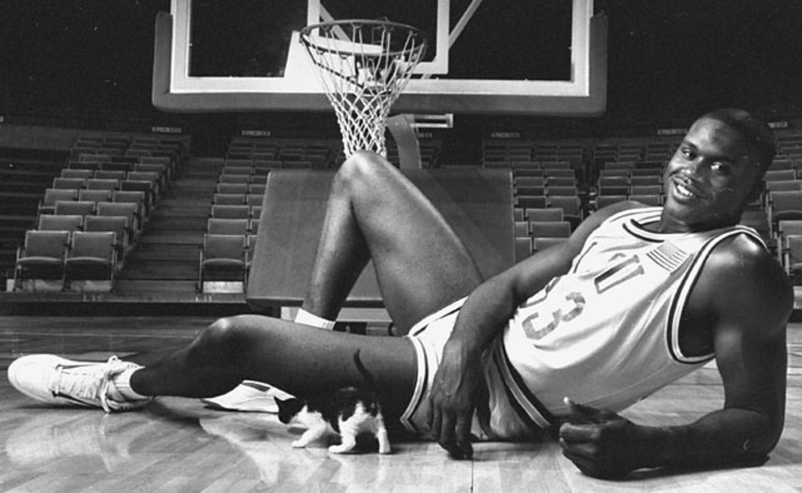
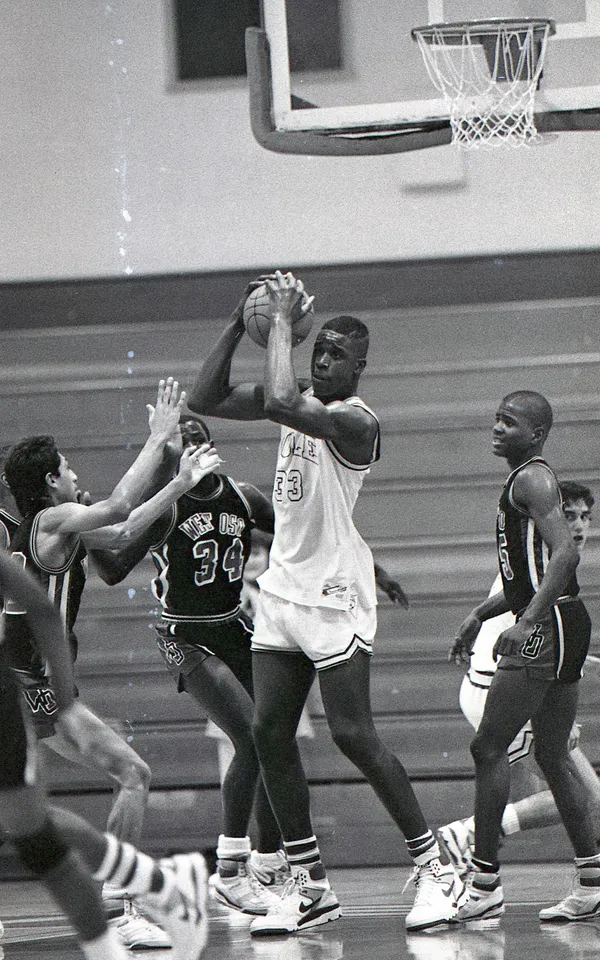
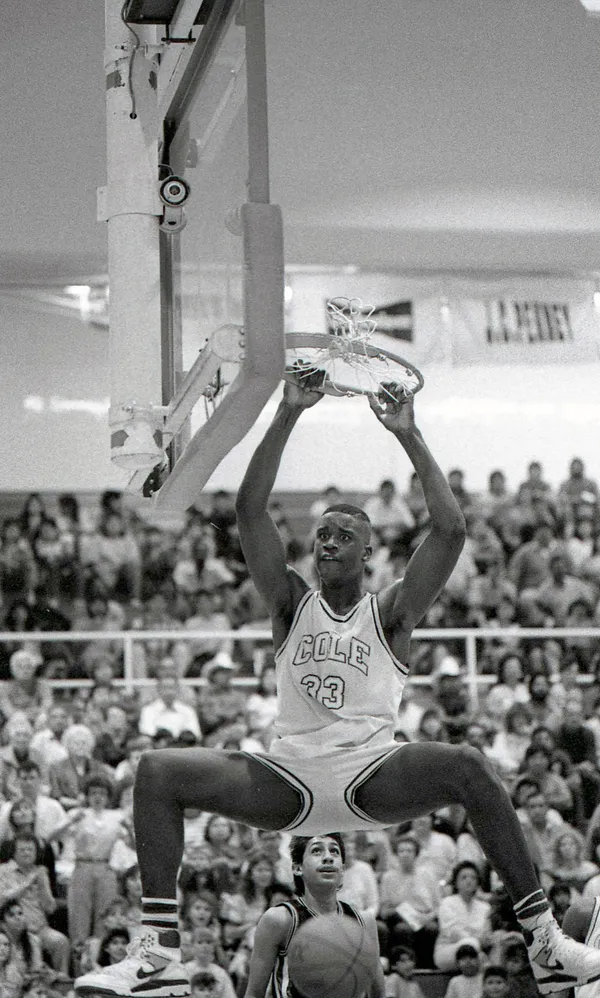
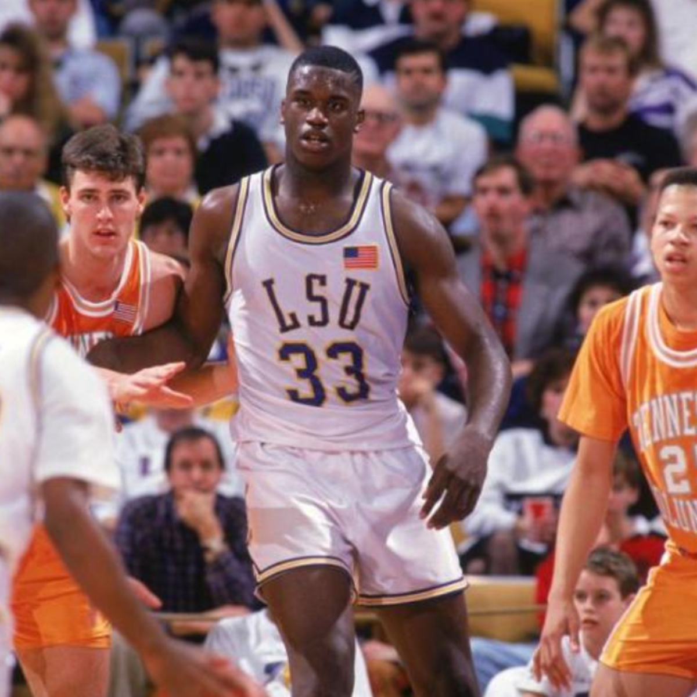

By Brendan Quinn
The narrators are reliable because they still can’t believe what they saw. Imagine, for a moment, being a scout or college recruiter heading out to evaluate some rising high school seniors. You have seen this player, you’ve heard about that player. You have your list of guys. Then you look over and see a 6-foot-11, 240-pound smokestack galloping down the floor, dunking on cowering souls and blocking shots across the building.
Who, you ask, is that?
Today, or for most of the last quarter-century, really, this would be impossible. By the time a basketball player reaches the summer of his senior year, he has been rated, reviewed and processed by the churn and burn of the recruiting world. And the prodigies? The physical specimens plucked from the pages of a Marvel comic? They’re incubated and monetized. They are commodified on social media. Their names are written in the sky.
Think about it. Who was the last basketball phenom who needed to be seen in person to be believed? When was the last time a transcendent American player just … appeared? You have to go back, way back — pre-internet, pre-ESPN, pre-everything — to come upon the perfect combination of extraordinary circumstances.
This month, college basketball coaches across the country are returning to the road and in-person recruiting after a dormant year spent behind screens. Maybe it’s a good time to go hunting for those extraordinary circumstances.
Maybe it’s a good time to remember the summer of 1988.
“You know, if it were today, he would’ve had 10 million followers as a 16-year-old,” says Sonny Vaccaro, the don of grassroots basketball in America. “But back then, he was a total stranger.”
How’s this for extraordinary?
“No one,” Vaccaro says, “knew who Shaquille O’Neal was.”
OK, so technically, two people knew.
In the summer of 1985, Dale Brown was coming off his 13th season as the head coach at LSU. His tenure in Baton Rouge was one of wild swings. His teams had won four of the previous seven SEC titles and reached the 1981 Final Four, but were often rebuked by Tigers fans for underachieving. Brown was an unapologetic nonconformist. His program was a favorite target of the NCAA and he ducked and dodged bad headlines. He countered by waging war on the establishment, clapping back against those investigations with claims of the NCAA’s “monumental hypocrisy.” He was one of a kind, and LSU opted to keep him around, signing Brown to a five-year extension in April 1985 after rumors emerged that he might jump ship for a potential opening at Oral Roberts.
Brown was, more than anything, a master motivational speaker. He often told the story of his father splitting three days after he was born and his mother raising him in a one-room apartment above a bar in North Dakota. Basketball became a substitute for his father, he would say. It gave him discipline and direction. His story resonated.
“Dale wasn’t a coach — I mean, of course he was a very good coach — but, in truth, he was a preacher,” Vaccaro says.
Everyone knew this, including officials at the U.S. Department of State. That summer, Brown was booked to travel to Germany to speak to officers about leadership and to enlisted men about teamwork. He gladly obliged and was fortunate to have a travel partner. Ron Abernathy, LSU’s associate head coach, agreed that same summer to coach in an international youth tournament in Namur, Belgium.
Brown delivered speeches at U.S. Army bases dotting the German border. The final stop on his tour was a basketball skills clinic at a small base in Wildflecken. This happened to be where a man named Sgt. Philip Harrison was stationed. In 1975, 10 years earlier, in Newark, N.J., Harrison had married a woman named Lucille O’Neal, who had a 3-year-old son named Shaquille. Harrison raised him like his own son and the family moved overseas upon his being transferred to Germany in 1984.
After Brown’s clinic in Wildflecken, the LSU coach felt a tap on the shoulder. Turning around, his eyes grew wide and … OK, now this is where legend turns to lore. In the original telling of this story, published by the Associated Press in 1988, a 13-year-old Shaquille O’Neal stood about 6 feet 4. By the time Sports Illustrated published its version of the story in 1991, that same 13-year-old Shaquille was up to 6 feet 6. When it was written multiple times during his rookie season with the Orlando Magic in 1993, young Shaq was reported to be 6 feet 8. When Shaq himself retold the story on “The Players Tribune” podcast in 2020, he was suddenly up to 6 feet 9.
Let’s just say he was tall.
Stammering and nervous, young Shaquille asked Brown for some tips on strengthening his legs and improving his jumping ability. He complained he couldn’t dunk yet. Looking him up and down, Brown asked, “What rank are you, soldier?”
Shaquille, ducking his head, replied, “Coach, I’m 13 years old.”
“Uh, is your father around, son?” Brown said.
O’Neal brought him over to the saunas, where a 6-foot-4 Sgt. Harrison greeted him with varying degrees of distrust. Brown handed him his business card — Dale Brown, Head Men’s Basketball Coach, LSU Tigers — and Harrison said he was more concerned with his son’s education than with basketball. Seizing the moment, Brown concurred, saying he couldn’t agree more. Education first, of course.
“I told Phil we were going to be the best of friends,” Brown says now, 36 years later.
The two shook hands and Brown left with a mailing address to send Shaquille some workouts.
“I thought, ‘Oh, maybe we have something here.'”
Leaving Wildflecken, Brown took the train to Belgium to link up with Abernathy. He mentioned he had met a fascinating kid named Shaquille O’Neal. He gave Abernathy the mailing address. In time, the two returned stateside and Abernathy met with LSU’s athletic trainer. He gathered some workouts and drills and mailed them to Germany. For the next year, he traded letters with Shaq.
“By the end of his 10th-grade year,” Abernathy says today, “he wrote to me, updating everything he was doing. I read it and said, ‘Oh my goodness,’ then went right over to Dale’s office and said, ‘Coach, you won’t believe it, but that kid in Germany says he’s now up to 6-6 or 6-7.'”
Abernathy and Brown both kept the lines of communication open, sending letters and workouts to Wildflecken. They had no idea what was coming next.
“I got another letter in the spring (of 1987) and again ran over to Dale’s office,” Abernathy, now 70, recalls, laughing. “I went in and said, ‘Coach, you won’t believe it, but that kid in Germany now says he’s 6-9 and his family is moving to San Antonio.'”
Robert G. Cole High School is a public school on the U.S. Army base at Fort Sam Houston in Texas. Its enrollment hovered around 320 when Shaquille O’Neal, age 15, enrolled as a junior for the 1987-88 school year. He was 6 feet 9, about 230 pounds, with size 17 feet. Having struggled with his coordination, he was advised in Germany to quit basketball and focus on being a soccer goalie.
“But he was a pretty athletic kid,” Cole coach Dave Medura said during a school Hall of Fame speech in 2014. “I thought, ‘Oh, maybe we have something here.'”
Yeah, perhaps.
As a junior, O’Neal averaged 18 points, 14 rebounds and six blocks. Playing against similar small schools in the state, he led Cole High to a 32-1 record and an appearance in the Class 2A regional final. The season ended there with a 79-74 loss to Liberty Hill High School as O’Neal picked up four fouls in the first quarter and scored eight points. (He’d avenge the loss with a 40-point, 29-rebound, 11-block performance in the following year’s regional final rematch.)
The only school other than LSU to heavily recruit Shaq as a junior in high school? It was the University of Texas at San Antonio Roadrunners. Assistant coach Mike Wacker got wind of a big kid at Cole High School. “He came walking in one day and told (head coach) Ken Burmeister that we might have a shot at some diamond in the rough,” remembers Glynn Cyprien, then a UTSA student assistant. So Burmeister invited O’Neal to campus for a game.
“I was in a hallway sometime before tip-off when I saw this monster walking toward me,” says former UTSA assistant Gary Marriott, “and I said out loud, ‘Who in the f— is that!?’ Burmeister comes over and tells me this is Shaquille O’Neal. He says, ‘Look at this kid! We gotta get him!'”
Burmeister threw everything he had at O’Neal — “Probably the greatest recruit in UTSA history,” Marriott says with a laugh — but the Roadrunners didn’t stand much of a chance. O’Neal spent the majority of his junior season being pursued primarily by LSU.
“In today’s game, when Shaq was in eighth or ninth grade, everybody and their mamas would be lined up to see him,” says Johnny Jones, a former LSU assistant. “He’d be on the cover of magazines. You name it. It would be a totally different deal. We had him to ourselves for a year.”
Abernathy was the first LSU coach dispatched to San Antonio when O’Neal came to the U.S. It was early in his junior year.
“So I go walking into that little gym they had over there and it was like … oh … my … goodness,” Abernathy says. “I remember getting on the phone and calling back to campus, like, ‘Uh, hey, Coach, the kid is kind of a monster.'”
Abernathy went to the house, visited with Lucille O’Neal and Sgt. Harrison. Lucille was the glue of the family. Phil was the disciplinarian. Together they built Shaq.
LSU assistant Craig Carse made the next visit to San Antonio.
“It was after the school year and it was kinda crazy — I was the only coach in the gym,” Carse says. “I called over to Dale and said, ‘Man, you better get over and see this kid.'”
The LSU staff was quickly realizing it was experiencing one of the most serendipitous strokes of good timing and good fortune in recruiting history.
“It was a different time. We had no limit on phone calls,” Carse says. “I talked to Shaq one night for seven hours. Chris Jackson (Mahmoud Abdul-Rauf), I did the same thing. I used to drive to Gulfport, Miss., in the mornings — 139 miles. We didn’t have any more visits with Chris, so I’d wait until he walked out onto the porch, and then I would follow him to school, driving alongside him as he walked down the sidewalk. I would never say a word. Just wave. And then I would drive back, get to campus around 10 o’clock. But I would start every day by driving 139 miles one-way. You don’t get a guy like a Chris Jackson because you’re lucky. You get him because you work. Same with Shaq.”
"‘Oh, who is this?!’ Man, I knew right then his recruitment was about to be like holding onto a wild horse.”
Abernathy was among the best recruiters in the country. He was named so by Basketball Times on multiple occasions. He didn’t merely get to know families. He went to Sunday services with grandmothers. In 1984 he sealed a commitment from perhaps the nation’s top recruit, John Williams of Crenshaw High School in Los Angeles, thanks to a relationship he had maintained for years from across the country.
And Brown? He was tireless. He had a saying, “You have to circulate to percolate,” and he lived by it, trying to be everywhere, all the time. Once, according to Carse, while on the road recruiting, Brown squeezed in speaking engagements at a real estate convention in New Orleans and an accounting convention in Boston, made an appearance at the Hart Schaffner Marx suit company convention in Chicago, and traveled to a state championship game in California, all in the span of two days.
Back to Shaq. Brown saw the budding center play twice in-person as a high schooler — once in summer league and then during the high school regular season. On a home visit late in his junior year, Brown told Sgt. Harrison, “You know, Phil, you need to get Shaquille involved in these summer events.”
Carse was standing next to Brown and looked at him side-eyed. Under his breath, he muttered, “Coach, what are you doing?”
All along, the LSU staff felt as if it was sitting on the biggest secret in basketball. Now Brown was encouraging the cat to get out of the bag.
“I’ll never forget it,” Carse says, “Dale would just look at me and go, ‘Don’t worry about it. We’ve got ’em.'”
The basketball world was about to test that theory.
The 1989 recruiting class was headlined by a point guard out of Queens, N.Y., named Kenny Anderson; a sweet-shooting guard from Ohio named Jimmy Jackson; point guard Bobby Hurley of Jersey City, N.J.; a Chicago forward by the name of Deon Thomas; and Allan Houston, a shooting guard out of Louisville. These were the stars. Their names appeared in rankings. Their mailboxes were stuffed with college letters. Heading into the summer of 1988, they were all lined up to play to the premier camps — the likes of Vaccaro’s ABCD Camp, Howard Garfinkel’s Five Star Camp and Dave Bones’ Blue Chip Basketball Camp.
O’Neal would submit his name for two events — the Houston Shootout and the Basketball Congress International (BCI) Summer Nationals in Tempe, Ariz.
And that’s when everything changed.
There wasn’t a huge crowd for the Houston Shootout, but those who were there couldn’t quite believe what they were seeing. O’Neal was now nearly 6-11 and 240 pounds. Everything he did was radioactive and violent. The dunks. The blocks. He grabbed rebounds and dribbled the length of the floor. He was massive but played with enviable dexterity. He looked like a bully but smiled like a puppy. Throughout the gym, butts slid forward on bleachers.
“I was just sitting in the stands, shaking my head,” Abernathy says. “Of course he was phenomenal, and now everybody was talking about him. ‘Oh, who is this?!’ Man, I knew right then his recruitment was about to be like holding onto a wild horse.”
Clark Francis, the editor and publisher of Hoop Scoop, perhaps the most widely read national scouting publication at the time, was in Pittsburgh at the Five Star camp when Chris Wallace called. Wallace would go on to become the general manager of the Boston Celtics, but at the time was the founder and publisher of Blue Ribbon College Basketball Yearbook.
“And he was like, ‘Clark, there’s a guy who just blew up in the Houston Shootout this morning that you need to see — a guy named Shaquille O’Neal. No one has heard of him,'” Francis says all these years later.
Word was out. Before that day, the best rising senior centers in the country were thought to be Conrad McRae from Brooklyn, N.Y., Anthony Douglas from Memphis and Matt Wenstrom from Houston. No longer. Wenstrom also played in the Houston Shootout and served as an unfortunate springboard.
Scooter McCray, a Louisville assistant, was in the stands.
“Shaq was running up and down the court, dunking everything, just dominating,” he says. “For a lot of people, they were just like me — it was their first time getting to see this guy in person and he was just going crazy on (Wenstrom). After that, I told anyone who would listen about him. I remember telling Pervis Ellison to remember the name Shaquille O’Neal. Perv was like, ‘C’mon, Scoot, the kid is in high school!’ And I was like, ‘Yeah, well, this dude is legit. You’ll see.'”
Coaches from all over the country booked flights to Phoenix. O’Neal was next scheduled to play at BCI on the Arizona State campus. His team’s games were moved to the main floor at the 14,000-seat ASU Activity Center. Eddie Sutton (Kentucky), Joey Meyer (DePaul), Dean Smith (North Carolina) and Digger Phelps (Notre Dame) were all courtside, among many, many others.
“I only remember going up to him afterward,” says Phelps, now 79. “I reached out to shake his hand and my hand just disappeared. It was incredible.”
That weekend turned the rumors of the prior week into reality.
“It was not hard to figure out he was one of the best players in the country,” Francis says. “The first time I saw him with my own eyes, he immediately became a top-five guy. It was basically overnight.”
So much of recruiting amounts to leaning over the rail of a craps table. Really, what are the odds of hitting big? 30 to 1? For all of the best programs in the country, though, O’Neal amounted to a sure thing who emerged overnight.
“Before that, the last big man to show up and dominate like that was Moses (Malone in the early ’70s),” says Dick “Hoops” Weiss, the dean of college basketball writing. “At that point, a lot of people were starting to fall into the trap of recruiting off (player ranking) lists. But then comes this guy. The biggest surprise for everyone was his physical size and agility. Unbelievable. He had that beast mode to him.”
Every top program scrambled to catch up on O’Neal’s bio. They learned about his time in Germany. They learned he wouldn’t even turn 17 until the following March. They learned he held a 3.0 GPA. Only a few had even heard of him before his summer breakout. The Illinois coaching staff had gotten an early tip from none other than Ken Burmeister. He called Illini head coach Lou Henson once he realized UTSA didn’t stand much of a chance. Henson put Jimmy Collins, his top recruiter, on the case.
“(O’Neal) was clearly going to be a superstar and we had to go after him,” says Mark Coomes, an assistant on that Illinois staff. “But it was pretty clear that Dale Brown and LSU were always No. 1 on (O’Neal’s) list.”
That didn’t stop everyone else.
“After (the BCI),” Carse says, “the next thing I know, Shaquille calls me and it’s, ‘Hey, UCLA called me.’ ‘Hey, Louisville called.’ ‘Hey, North Carolina called.’ ‘Hey, I just talked to Jerry Tarkanian.’ ‘Hey, John Thompson just called.’ ‘Hey, Jim Valvano just called.’ And I’m like, oh man, here we go …”
In two weeks, Shaquille O’Neal went from an unknown name to the de facto top center in the country. Scouting services described him as a raw hybrid of Patrick Ewing’s strength, Hakeem Olajuwon’s ability, Charles Barkley’s explosiveness and David Robinson’s shot-blocking. Dick Vitale, the emerging voice of college basketball on TV, hyped O’Neal as only he could at BCI. In Hoop Scoop, Francis named O’Neal a first-team preseason All-American along with Kenny Anderson, Jimmy Jackson, Allan Houston and Jamal Faulkner. In the National Recruiting Cage Letter, longtime scout Van Coleman wrote: “Shaquille is a sleeping giant who has awoken deep in the heart of Texas.”
O’Neal set recruiting visits to LSU, North Carolina, NC State, Louisville and Illinois. Every trip was an event. Denny Crum hosted O’Neal for brunch at his home along with the entire Louisville staff and their families. Crum often bragged he made the greatest pancakes that had ever been flipped. He would do so while cooking stacks and doling them out to guests. With Shaq at the table, Crum took his own pancake praise to another level. The more Crum bragged, the more Shaq ate. It turned into a duel. Could Crum make as much as Shaquille could consume?
“The thing that made Shaq different was his personality,” says Wade Houston, who was on the Louisville staff at the time. “Sure, the first time I saw him, he was one of the biggest people I’d ever seen, but he was genuine and gentle. Everyone loved him. He was magnetic.”
O’Neal was shown around North Carolina by Rick Fox. He might’ve considered the Tar Heels more strongly, but Dean Smith already had a center in his 1989 recruiting class. It was Matt Wenstrom from Texas. He would averaged 1.6 points per game over four seasons in Chapel Hill.
Every school made its pitch and others tried. UNLV took a major run at him. So did UCLA.
But none added up to LSU.
O’Neal visited Baton Rouge in early November 1988. He was introduced at Tiger Stadium during a football game, raising his hands to the screams of 80,000 fans, a recruiting tactic that has since been outlawed by the NCAA. Brown invited O’Neal into his home. The two were four years and 5,000 miles away from Wildflecken.
Shaquille signed his national letter of intent to attend LSU that same month.
“The first time I saw Shaq,” Brown now says, “I had never seen anything like him. But I just so happened to have gotten there first. It ended up being a relationship that changed my life.”
O’Neal averaged 31 points, 22 rebounds and six assists as a senior at Cole High, leading the school to a 36-0 season. Despite foul trouble, he put up 38 points and 20 rebounds in the 1989 state title game. His fame grew and grew. O’Neal loved it. The first time he saw a picture of himself in a magazine, he carried it among his school books for weeks and would stare at it during class.
He told the Fort Worth Star-Telegram in April 1989: “I don’t mind all the attention because I could be in Germany playing soccer and nobody would know anything about me.”
The 1988-89 school year ended with Shaq being named a consensus All-American. He was finally seen for the first time by fans nationwide during the McDonald’s All-American Game. He put on a show, clearing a rebound, going coast-to-coast and dunking to a soundtrack of Vitale losing his mind. He was named co-MVP with Hurley and followed it with a trip to the Dapper Dan Roundball Classic, an all-star game put on by Vaccaro. (Today Vaccaro says he might’ve tried to attach himself to Shaq the same way he did Michael Jordan, but “I fell in love with Billy Owens instead and didn’t know the value of Shaquille to a shoe company.”) Shaq was named MVP at the Dapper Dan as well.
So that, they say, is how it happened.
Sometimes, for players and coaches, recruiting is luck. Sometimes it’s the forces of nature. Sometimes it’s both. In Shaq’s case, most fittingly, it was unlike anything before or since.